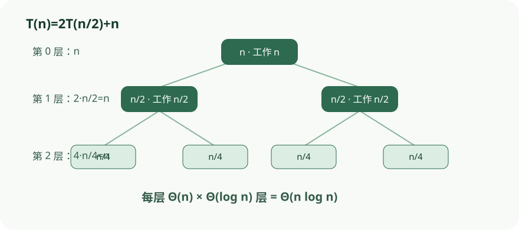

递推树把每层代价与树高分开，适合在套公式前检查复杂度来源。
依据本地课程资料 lectures/chap2.pdf 重绘；交互用于解释算法状态与证明不变量，不替代正文中的完整论证。

CS170 · 第 3 讲
以快速乘法、递推式、归并类算法与 FFT 为主线，掌握分解—递归—合并的设计范式。
分治（divide-and-conquer）策略把原问题按三步处理：
真正的计算量分散在三处：把问题拆成子问题的过程、递归尾部规模足够小被直接求解的时刻、以及把部分答案黏合在一起的时刻。这三步由递归结构统一调度。
设 x、y 是两个 n 位二进制整数，n 为 2 的幂。把它们各切成左右两半：
\[x = 2^{n/2} x_L + x_R,\quad y = 2^{n/2} y_L + y_R.\]
直接展开得
\[xy = 2^{n} x_L y_L + 2^{n/2}(x_L y_R + x_R y_L) + x_R y_R.\]
若用 4 次 n/2 位乘法 \(x_L y_L,\; x_L y_R,\; x_R y_L,\; x_R y_R\)，得递推式
\[T(n) = 4T(n/2) + O(n),\]
解为 \(O(n^2)\)，与传统竖式乘法同阶，常数改进没有带来渐进收益。
高斯技巧把 4 次降为 3 次：只需计算
\[P_1 = x_L y_L,\quad P_2 = x_R y_R,\quad P_3 = (x_L + x_R)(y_L + y_R),\]
因为 \(x_L y_R + x_R y_L = P_3 - P_1 - P_2\)。新算法（图 2.1）递推式为
\[T(n) = 3T(n/2) + O(n).\]
递归树高 \(\log_2 n\)，分支因子 3，第 k 层有 \(3^k\) 个子问题，每个规模 \(n/2^k\)。该层工作量
\[3^k \cdot O\bigl(\frac{n}{2^k}\bigr) = \bigl(\frac{3}{2}\bigr)^k \cdot O(n).\]
层工作量随 k 以 3/2 等比递增，总工作量由末项主导：
\[O(3^{\log_2 n}) = O(n^{\log_2 3}) \approx O(n^{1.59}).\]
相比分支因子 4 时 \(4^{\log_2 n} = n^2\) 个叶子，常数系数的小改动在每一层复合放大，影响巨大。
实际实现一般不会递归到 1 位，而是到 16/32 位时交给硬件乘法指令。
用分治法计算 \(x = 1011_2 = 11\) 与 \(y = 1100_2 = 12\) 的乘积。
切半：当前位数 \(n=4\)，所以 \(x_L = 10_2 = 2,\; x_R = 11_2 = 3,\; y_L = 11_2 = 3,\; y_R = 00_2 = 0\)。
三次子乘法：
\(P_1 = x_L y_L = 2 \times 3 = 6\)
\(P_2 = x_R y_R = 3 \times 0 = 0\)
\(P_3 = (x_L + x_R)(y_L + y_R) = 5 \times 3 = 15\)
因此交叉项为 \(P_3-P_1-P_2=9\)。按当前 \(n=4\) 合并时，高半部分左移 \(n\) 位，交叉项左移 \(n/2\) 位：
\[xy = P_1 \cdot 2^4 + (P_3-P_1-P_2) \cdot 2^2 + P_2\] \[=6 \cdot 16 + 9 \cdot 4 + 0 = 132.\]
这与 \(11 \times 12=132\) 一致。易错点是把“位数”与“移位后的数值”混淆：这里 \(2^4=16\)，而不是 \(4^3=64\)。
分治算法常按「a 个规模为 n/b 的子问题 + O(n^d) 合并」的范式运行，运行时间满足
\[T(n) = aT(\lfloor n/b \rfloor) + O(n^d),\quad a>0,\; b>1,\; d \ge 0.\]
Master 定理给出闭式解：
\[T(n) = \begin{cases} O(n^d) & \text{if } d > \log_b a \\ O(n^d \log n) & \text{if } d = \log_b a \\ O(n^{\log_b a}) & \text{if } d < \log_b a \end{cases}\]
假设 n 是 b 的幂以忽略下取整。递归树高 \(\log_b n\)，分支因子 a，第 k 层有 \(a^k\) 个规模 \(n/b^k\) 的子问题，该层工作量
\[a^k \cdot O\bigl((n/b^k)^d\bigr) = O(n^d) \cdot \bigl(a/b^d\bigr)^k.\]
层工作量构成等比数列，公比 \(r = a/b^d\)：
\(r < 1\)（即 \(d > \log_b a\)）：递减级数，和由首项决定，为 \(O(n^d)\)；
\(r > 1\)（即 \(d < \log_b a\)）：递增级数，和由末项决定。末项 k = \(\log_b n\) 时
\[O(n^d)\bigl(a/b^d\bigr)^{\log_b n} = a^{\log_b n} = n^{\log_b a};\]
\(T(n) = T(\lfloor n/2 \rfloor) + O(1)\) 对应 \(a=1,\; b=2,\; d=0\)。\(\log_2 1 = 0 = d\)，属第二种情形，\(T(n) = O(\log n)\)。
归并排序（Mergesort）是分治排序的标准实例：把数组对半切，递归排序两半，再合并两个有序子数组。
function mergesort(a[1..n])
if n > 1:
return merge(mergesort(a[1..⌊n/2⌋]), mergesort(a[⌊n/2⌋+1..n]))
else: return a
合并子过程 merge(x[1..k], y[1..l]) 每次取两数组首元素较小者，递归构造结果。每次递归调用做 O(1) 工作，总时间 O(k + l)。于是
\[T(n) = 2T(n/2) + O(n) = O(n \log n).\]
迭代版本：维护一个队列 Q，初始把每个元素作为单元素有序数组 inject 进去；当 |Q| > 1 时，反复 eject 两个数组、merge 后 inject 回队尾，最终只剩一个有序数组。
function iterative-mergesort(a[1..n])
Q = []
for i = 1 to n: inject(Q, [a_i])
while |Q| > 1: inject(Q, merge(eject(Q), eject(Q)))
return eject(Q)
所有真实工作量都发生在 merge 阶段：从单元素开始两两合并成 2 元组，再成 4 元组，层层向上。
中位数是列表的第 50 百分位。直接排序取中位需 \(O(n \log n)\)，但排序做了多余工作——我们只关心第 k 小的元素，不关心其余元素的相对顺序。
选择问题（Selection）：输入数集 S 与整数 k，输出 S 中第 k 小元素。中位数对应 \(k = \lfloor |S|/2 \rfloor\)。
任选主元 v，把 S 分成三份：\(S_L\)（v）。三份可在 O(|S|) 时间内原地算出。然后
\[ \text{selection}(S,k) = \begin{cases} \text{selection}(S_L, k) & k \le |S_L| \\ v & |S_L| < k \le |S_L| + |S_v| \\ \text{selection}(S_R, k - |S_L| - |S_v|) & k > |S_L| + |S_v| \end{cases} \]
称 v 为好主元（good pivot）若它落在 25%–75% 百分位之间。此时 \(|S_L|, |S_R| \le \frac{3}{4}|S|\)，子问题规模至少缩水四分之一。列表里恰有半数元素是好主元，故一次随机选到好主元的概率为 1/2。
由引理「平均抛 2 次公平硬币才出现一次正面」，平均两次 split 就能让数组缩到至多 3/4。设 T(n) 为期望运行时间：
\[T(n) \le T(3n/4) + O(n) \implies T(n) = O(n).\]
因此随机选择算法期望线性时间返回正确结果。最坏情况（每次都选到极值）是 \(\Theta(n^2)\)，但极罕见。
与 Mergesort 的对照：Mergesort 按位置对半切（不看元素大小），但花大力气 merge；选择算法精心按值划分，合并则无需额外工作。Quicksort 正是把选择算法的划分方式用于排序：划分后再递归两半即可，无需 merge。
设 \(S = \{2,4,6,8,10,12,14,16,18,20\}\)，求第 8 小元素（即 selection(S,8)）。
主元 v = 10：划分得 \(S_L = \{2,4,6,8\}\)（4 个）、\(S_v = \{10\}\)（1 个）、\(S_R = \{12,14,16,18,20\}\)（5 个）。
\(k = 8 > |S_L| + |S_v| = 5\)，目标在 \(S_R\) 中，新秩 \(k' = 8 - 5 = 3\)：selection(S,8) = selection(\(\{12,14,16,18,20\}\), 3)。
主元 v = 16（在新子问题上）：\(S_L = \{12,14\}\)（2 个）、\(S_v = \{16\}\)（1 个）、\(S_R = \{18,20\}\)（2 个）。
\(k' = 3 \le |S_L| + |S_v| = 3\)，命中主元，答案为 16。
要点：每次划分后秩 k 要根据 \(|S_L|\) 与 \(|S_v|\) 的调整量重新计算。
插值（Interpolation）是求值（Evaluation）的逆运算：给定多项式 \(A(x)\) 在 \(n\) 个点 \(x_0, \ldots, x_{n-1}\) 上的取值，恢复其系数表示 \(a_0, \ldots, a_{n-1}\)。我们之前已设计出 FFT 算法，能在 \(O(n \log n)\) 时间内将系数表示转化为值表示——前提是求值点为 \(n\) 次单位根 \(1, \omega, \omega^2, \ldots, \omega^{n-1}\)。现在只需补上最后一块拼图。
令人惊异的是，插值可以通过同一个 FFT 算法完成，只需将原根 \(\omega\) 替换为 \(\omega^{-1}\)，再整体除以 \(n\)：
\[\langle \text{coefficients} \rangle = \frac{1}{n}\,\text{FFT}(\langle \text{values} \rangle; \omega^{-1})\]
至此，图 2.5 中的 \(O(n \log n)\) 多项式乘法算法已完全确定：
总时间复杂度为 \(O(n \log n)\)。这一结果简洁得近乎巧合，但我们将在矩阵视角下看到其深刻原因。
取 \(n = 4\)，\(\omega = e^{2\pi i/4} = i\)。矩阵 \(M_4(i)\) 为：
\[M_4(i) = \begin{pmatrix} 1 & 1 & 1 & 1 \\ 1 & i & -1 & -i \\ 1 & -1 & 1 & -1 \\ 1 & -i & -1 & i \end{pmatrix}\]
验证第 0 列 \((1, 1, 1, 1)\) 与第 1 列 \((1, i, -1, -i)\) 的内积：
\[\langle c_0, c_1 \rangle = 1\cdot \overline{1} + 1\cdot \overline{i} + 1\cdot \overline{(-1)} + 1\cdot \overline{(-i)} = 1 - i - 1 + i = 0.\]
第 0 列与自身的内积为 \(1+1+1+1 = 4 = n\)。因此 \(M_4(i) M_4(i)^* = 4I\)，反演公式给出：
\[M_4(i)^{-1} = \frac{1}{4}\,M_4(i^{-1}) = \frac{1}{4}\,M_4(-i).\]
这恰好对应逆 FFT 公式：将值表示除以 \(n\) 后，以 \(\omega^{-1} = -i\) 为根执行 FFT，即恢复系数。
为了更清晰地理解插值，我们把多项式两种表示之间的关系写成矩阵形式。设 \(A(x)\) 是次数 \(\leq n-1\) 的多项式，其系数向量和值向量通过一个 \(n \times n\) 的 Vandermonde 矩阵 \(M\) 相联系：
\[\begin{pmatrix} A(x_0) \\ A(x_1) \\ \vdots \\ A(x_{n-1}) \end{pmatrix} = M \begin{pmatrix} a_0 \\ a_1 \\ \vdots \\ a_{n-1} \end{pmatrix}, \qquad M_{j,k} = x_j^k.\]
当 \(x_0, \ldots, x_{n-1}\) 互不相同时，\(M\) 可逆，因此插值就是乘以 \(M^{-1}\)。一般矩阵求逆需 \(O(n^3)\)，Vandermonde 矩阵可优化到 \(O(n^2)\)，但仍不够快。
在 FFT 的特殊情形下，取 \(x_j = \omega^j\)（\(\omega\) 为 \(n\) 次单位根），矩阵变为 \(M_n(\omega)\)，其 \((j, k)\) 元为 \(\omega^{jk}\)。关键性质是：\(M\) 的各列互相正交。取第 \(j\) 列与第 \(k\) 列的内积，得到等比数列求和：
\[1 + \omega^{j-k} + \omega^{2(j-k)} + \cdots + \omega^{(n-1)(j-k)}.\]
当 \(j \neq k\) 时，该和为 \((1-\omega^{n(j-k)})/(1-\omega^{j-k}) = 0\)；当 \(j = k\) 时每项都是 \(1\)，和为 \(n\)。由正交性得 \(MM^* = nI\)，因此 \(M^{-1} = (1/n)M^*\)。而 \(M^*\) 的 \((j, k)\) 元为 \(\omega^{-jk}\)，恰好等于 \(M_n(\omega^{-1})\) 的对应元，于是得到反演公式：
\[M_n(\omega)^{-1} = \frac{1}{n}\,M_n(\omega^{-1}).\]
几何上，FFT 是从标准基到 Fourier 基的一个旋转变换：求值将系数向量旋转到 Fourier 基下（值表示），插值将其旋转回标准基。多项式乘法在 Fourier 基下只是逐点相乘，远比标准基下简单。
对一般的 Vandermonde 矩阵 \(M\)，若插值点互异则 \(M\) 可逆，多项式由其取值唯一确定。取 \(n=3\)，点集 \(\{0, 1, 2\}\)，则：
\[M = \begin{pmatrix} 1 & 0 & 0 \\ 1 & 1 & 1 \\ 1 & 2 & 4 \end{pmatrix}.\]
若值向量为 \((3, 6, 11)^T\)，解 \(M\mathbf{a} = \mathbf{v}\) 得系数 \((3, 2, 1)^T\)，即 \(A(x) = 3 + 2x + x^2\)。验证：\(A(0)=3\)，\(A(1)=6\)，\(A(2)=11\)。此例说明插值点互异时，值表示与系数表示一一对应；FFT 则进一步选取单位根，使 \(M\) 具有正交性，从而将求逆简化为共轭转置。
快速傅里叶变换（FFT）的核心是高效计算离散傅里叶变换（DFT），即计算向量 \(a = (a_0, \ldots, a_{n-1})\) 与 \(n \times n\) DFT 矩阵 \(M_n(\omega)\) 的乘积。矩阵 \(M_n(\omega)\) 的第 \((j,k)\) 项为 \(\omega^{jk}\)，其中 \(\omega\) 是主 \(n\) 次单位根，满足 \(\omega^n = 1\) 且 \(\omega^0, \omega^1, \ldots, \omega^{n-1}\) 互不相同。直接计算需要 \(O(n^2)\) 次运算。从多项式角度看，这等价于求多项式 \(A(x) = a_0 + a_1 x + \cdots + a_{n-1} x^{n-1}\) 在所有 \(n\) 次单位根处的取值，即求值问题。FFT 是多项式乘法算法的核心子程序。
分治结构。 将矩阵的列按奇偶分开后，利用 \(\omega^{n/2} = -1\) 和 \(\omega^n = 1\) 可发现：左上角的 \(n/2 \times n/2\) 子矩阵恰好是 \(M_{n/2}(\omega^2)\)，左下角的子矩阵同样如此。右上和右下子矩阵则分别是 \(M_{n/2}(\omega^2)\) 的第 \(j\) 行整体乘以 \(\omega^j\) 和 \(-\omega^j\)。因此，原先规模为 \(n\) 的矩阵-向量乘法可归约为两个规模为 \(n/2\) 的问题：分别计算 \(M_{n/2}(\omega^2)\) 与偶数下标系数 \((a_0, a_2, \ldots, a_{n-2})\) 和奇数下标系数 \((a_1, a_3, \ldots, a_{n-1})\) 的乘积。这一归约的关键在于 \(\omega^2\) 是 \(n/2\) 次本原单位根，因此子问题仍是合法的 DFT，可以递归求解。
递归算法。 这一分治策略直接导出图 2.9 的伪代码：当 \(\omega = 1\) 时直接返回输入（此时 \(M_1(1)\) 是单位矩阵）；否则对偶、奇子序列分别递归调用 FFT，参数变为 \(\omega^2\)；最后用蝶形（butterfly）操作合并结果：
\[ r_j = s_j + \omega^j s'_j, \quad r_{j+n/2} = s_j - \omega^j s'_j. \]
正确性。 由数学归纳法，基础情形 \(\omega=1\) 时 \(M_1(1)\) 是单位矩阵，显然正确。归纳步骤中，两个子调用分别正确计算了 \(M_{n/2}(\omega^2)\) 与对应子序列的乘积，而合并步骤恰好实现了分块矩阵乘法，因此整个算法正确计算了 \(M_n(\omega) a\)。
复杂度。 递归式为 \(T(n) = 2T(n/2) + O(n)\)，其中 \(O(n)\) 是合并阶段的 \(n/2\) 次复数乘法与加法。由主定理或递归树可得 \(T(n) = O(n \log n)\)，相比朴素的 \(O(n^2)\) DFT 实现了指数级加速。
Worked Example: n=4 的 FFT 递归计算
给定输入向量 \(a = (a_0, a_1, a_2, a_3)\)，取 \(\omega = i\)（本原 4 次单位根，满足 \(i^4 = 1\)）。
第一层递归：将序列分为偶、奇两部分：
偶子序列：\((a_0, a_2)\)，参数 \(\omega^2 = -1\)
奇子序列：\((a_1, a_3)\)，参数 \(\omega^2 = -1\)
第二层递归（n=2）：对偶子序列 \((a_0, a_2)\) 调用 FFT，参数 \(-1\)：
\(s_0 = a_0 + (-1)^0 a_2 = a_0 + a_2\)
\(s_1 = a_0 - (-1)^0 a_2 = a_0 - a_2\)
对奇子序列 \((a_1, a_3)\) 调用 FFT，参数 \(-1\)：
\(s'_0 = a_1 + a_3\)
\(s'_1 = a_1 - a_3\)
合并（蝶形操作）：用 \(\omega^j\) 合并：
\(r_0 = s_0 + \omega^0 s'_0 = (a_0+a_2) + (a_1+a_3)\)
\(r_1 = s_1 + \omega^1 s'_1 = (a_0-a_2) + i(a_1-a_3)\)
\(r_2 = s_0 - \omega^0 s'_0 = (a_0+a_2) - (a_1+a_3)\)
\(r_3 = s_1 - \omega^1 s'_1 = (a_0-a_2) - i(a_1-a_3)\)
结果 \((r_0, r_1, r_2, r_3)\) 正是多项式 \(A(x)\) 在 \(1, i, -1, -i\) 处的取值，即 DFT。
将 FFT 的递归完全展开，可得到一个由蝶形单元构成的电路，清晰暴露其并行结构。以 \(n=8\) 为例（图 2.10），电路具有如下关键性质：
层次与规模。电路共有 \(\log_2 n\) 层，每层 \(n\) 个节点，总计 \(O(n \log n)\) 次运算。对于 \(n=8\)，有 3 层，每层 8 个节点，共 24 个运算节点。每个节点执行一次复数加法和一次复数乘法（蝶形操作）。从输入到输出，信号依次经过每一层的蝶形运算。
输入的位逆序排列。输入顺序为 \(0, 4, 2, 6, 1, 5, 3, 7\)。这是因为递归顶层先取偶数下标、再取奇数下一层再对偶数组取其中偶数（即原数组中 4 的倍数），依此类推。换言之，输入按索引二进制表示的最低位递增排列，次低位次之。将自然二进制序 \(000, 001, 010, 011, 100, 101, 110, 111\) 的位反转，恰好得到 \(000, 100, 010, 110, 001, 101, 011, 111\)，即 \(0, 4, 2, 6, 1, 5, 3, 7\)。这种排列是递归按奇偶分组的直接结果，也是 FFT 实现中需要特别注意的地方。
唯一路径。每个输入 \(a_j\) 到每个输出 \(A(\omega^k)\) 之间存在唯一路径。路径由 \(k\) 的二进制表示决定：从右（最低位）开始，0 走上边（0-边），1 走下边（1-边）。例如从 \(a_3\) 到 \(A(\omega^5)\)，\(k=5=101_2\)，路径为：最低位 1 走下边，中间位 0 走上边，最高位 1 走下边。反向路径（从输出到输入）则由 \(j\) 的二进制位决定。
路径贡献。在 \(a_j\) 到 \(A(\omega^k)\) 的路径上，各边权值之和模 \(n\) 等于 \(jk\)。由于 \(\omega^n = 1\)，输入 \(a_j\) 对输出 \(A(\omega^k)\) 的贡献恰好是 \(a_j \omega^{jk}\)，与 DFT 定义一致，因此整个电路正确计算了多项式 \(A(x)\) 在所有 \(n\) 次单位根处的取值。这一性质是 FFT 电路正确性的核心保证。
并行与硬件友好。电路中每层节点相互独立，天然适合并行计算和硬件实现。同一层的所有蝶形操作可以同时执行，因此理论上可用 \(\log_2 n\) 步完成全部计算。这使得 FFT 在 GPU 和 FPGA 上都能高效实现。
Worked Example: n=8 FFT 电路中的路径追踪
在 \(n=8\) 的 FFT 电路中，求输入 \(a_3\) 到输出 \(A(\omega^5)\) 的路径。
\(k=5\) 的二进制为 \(101\)。从右（最低位）开始读：
第 1 位（最低位）= 1：走 1-边（下边）
第 2 位 = 0：走 0-边（上边）
第 3 位 = 1：走 1-边（下边）
路径上的边权之和模 8 等于 \(3 \times 5 = 15 \equiv 7 \pmod{8}\)，因此 \(a_3\) 对 \(A(\omega^5)\) 的贡献为 \(a_3 \omega^7\)，与 DFT 定义 \(a_3 \omega^{3 \cdot 5} = a_3 \omega^{15} = a_3 \omega^7\)（因 \(\omega^8 = 1\)）一致。
依据本地课程资料 lectures/chap2.pdf 重绘；交互用于解释算法状态与证明不变量，不替代正文中的完整论证。

常数改进只在单层出现一次确实不影响渐进阶，但分治递归会在每一层都省掉一次乘法。分支因子从 4 降到 3 在每层复合放大，使叶子数从 \(n^2\) 降到 \(n^{\log_2 3}\)，复杂度由 \(O(n^2)\) 降到 \(O(n^{1.59})\)。
最坏 O(n²) 只在连续选到极值主元时发生，概率极低。算法的**期望**运行时间是 O(n)，实际中常优于确定性选择。
三种情形取决于 d 与 \(\log_b a\) 的相对大小。d 是合并代价的指数，直接影响层工作量等比数列的公比 \(a/b^d\)，不能只看 a、b。
插值可直接复用同一 FFT 算法，只需将 ω 替换为 ω⁻¹ 并除以 n，即可在 O(n log n) 时间内从值表示恢复系数表示。
当插值点 x₀, …, xₙ₋₁ 互不相同时，Vandermonde 矩阵可逆，多项式由其取值唯一确定；FFT 的单位根正是满足此条件的特殊点集。
问题：设某分治算法的递推式为 T(n) = 5T(n/2) + O(n²)，根据 Master 定理，下列哪个是其正确的渐进复杂度？
问题：关于随机选择算法（Randomized Selection），下列哪项描述是正确的？
问题：关于 FFT 与逆 FFT 的关系，下列哪项正确？
问题：对于 n=8 的 FFT 电路，输入的排列顺序是位逆序的。如果输入自然顺序为 (a0, a1, a2, a3, a4, a5, a6, a7)，那么 FFT 电路实际接收的输入顺序是？
lectures/chap2.pdf · 本段对应小节 · confidence: high · 第 55–57 节：复数乘法三积技巧、整数切半展开、递归树层工作量 (3/2)^k·O(n) 与叶子数 3^{log₂ n}lectures/chap2.pdf · 本段对应小节 · confidence: high · 第 58–60 节：T(n)=aT(⌊n/b⌋)+O(n^d) 的闭式解，公比 a/b^d 与 log_b a 比较lectures/chap2.pdf · 本段对应小节 · confidence: high · 第 60–62 节：mergesort 伪代码、merge 取首元素较小者、迭代版本用队列 eject/injectlectures/chap2.pdf · 本段对应小节 · confidence: high · 第 64–66 节：selection(S,k) 三向划分、好主元概率 1/2、T(n)≤T(3n/4)+O(n)⇒O(n)lectures/chap2.pdf · 2.6.3 Interpolation · confidence: high · Interpolation formula ⟨coefficients⟩ = (1/n) FFT(⟨values⟩; ω⁻¹) and the completion of the O(n log n) polynomial multiplication algorithm.lectures/chap2.pdf · 76-77 · confidence: high · Vandermonde matrix M relates coefficient and value representations; evaluation is multiplication by M, interpolation by M⁻¹.lectures/chap2.pdf · 77-78 · confidence: high · Orthogonality of FFT matrix columns; inversion formula Mₙ(ω)⁻¹ = (1/n) Mₙ(ω⁻¹); geometric view as rotation between standard and Fourier bases.lectures/chap2.pdf · 2.6.4 A closer look at the fast Fourier transform · confidence: high · 矩阵奇偶分块、图 2.9 伪代码、T(n) = 2T(n/2) + O(n) = O(n log n)lectures/chap2.pdf · 2.6.4 The fast Fourier transform unraveled · confidence: high · 蝶形结构、n=8 位逆序输入 0,4,2,6,1,5,3,7、路径贡献 a_j omega^{jk}